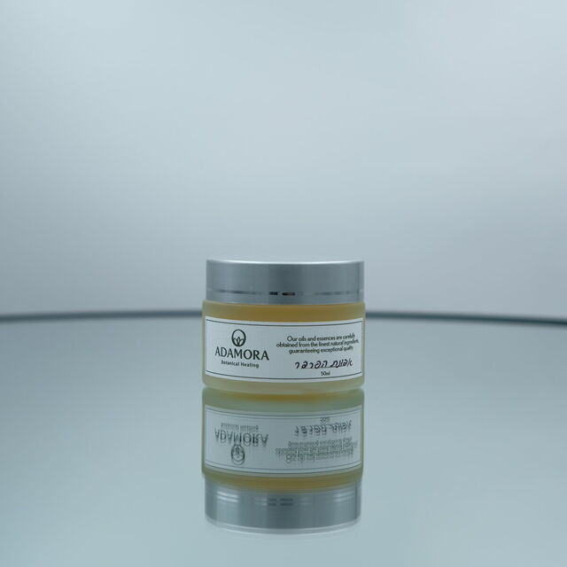
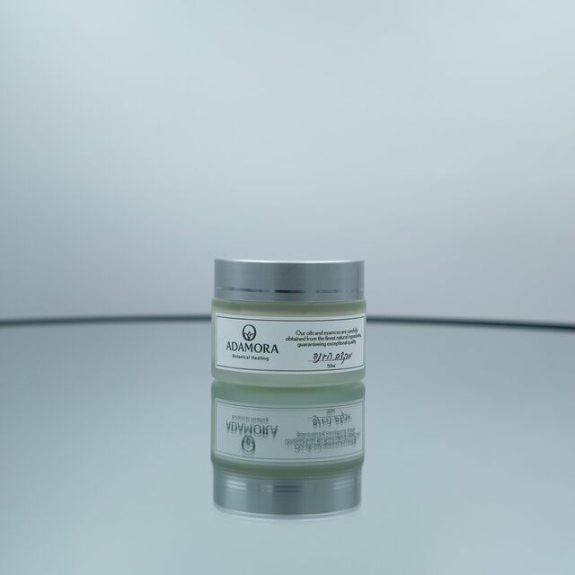
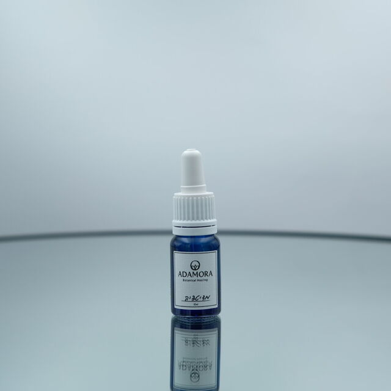
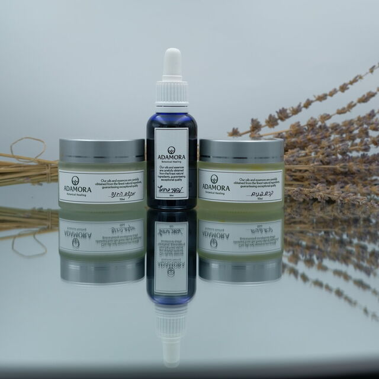
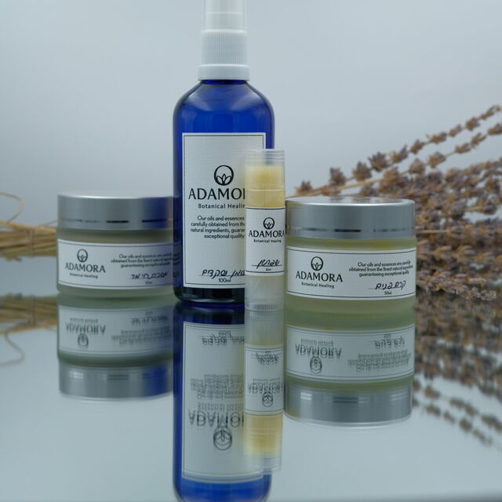
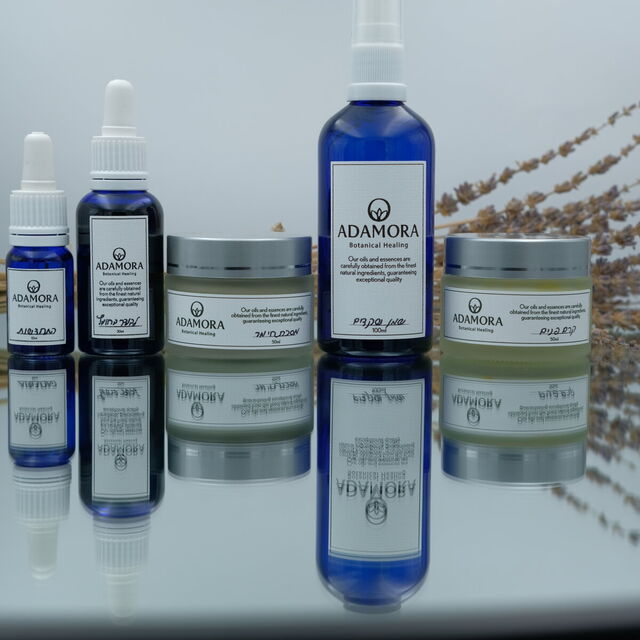

שמן לניקוי והזנת הפנים100 ml
שמן שקדים בכבישה קרה, עשיר ברכיבים המספקים הזנה ולחות. מתאים גם להורדת איפור.
עוד
מתאים לכל סוגי העור ומומלץ לטיפול במצבי אקנה ועור רגיש ומגורה.
משחות, שמנים, קרמים וערכות שאני רוקחת בעבודת יד.
זהו קטלוג — לא חנות. ההזמנה נעשית אישית: כותבות לי בוואטסאפ, ואני מתאימה לכן את המוצר ושולחת. חלק מהמוצרים נרקחים בהתאמה אישית אחרי שיחה קצרה.

24 מוצרים, בשלוש קבוצות: לפנים ולעור · לגוף ולנפש · למבער.
בכל כרטיס תיאור קצר. בלחיצה על ״עוד״ — הפירוט המלא והאזהרות.
להזמנה או לשאלה — בוואטסאפ.
שמן שקדים בכבישה קרה, עשיר ברכיבים המספקים הזנה ולחות. מתאים גם להורדת איפור.
מתאים לכל סוגי העור ומומלץ לטיפול במצבי אקנה ועור רגיש ומגורה.

קרם פנים ארומתרפי עשיר בשמנים ייחודיים ומזינים, בעל פעילות אנטי־אייג׳ינג.
מגיע בקומבינציית שמנים נבחרת / בהתאמה אישית. מומלץ לכל סוגי העור. מומלץ למרוח פעמיים ביום לאחר ניקוי הפנים בשמן שקדים. *יש להפריד שימוש מתכשירי קוסמטיקה אחרים*

מסכת חימר טיפולית ומזינה מבוססת חימר ירוק. מומלצת לטיפול באקנה.
מתאימה לשימוש חיצוני במריחה על העור. מתאימה גם לטיפול באיחוי שברים ונקעים. שימוש מתאים — מריחה פעם בשבוע עד 15 דק׳ על עור נקי; לאיחוי שברים ונקעים — מריחה והמתנה עד לייבוש. *מכיל שמן אבוקדו*

לחיטוי והרגעת מצבי עור שונים, ביניהם אקנה ומצבים ויראליים על פני העור.
תערובת מתאימה במריחה חיצונית ובבליעה. בליעה — טיפול במצבים ויראליים, הרגעה וטיפול בחרדה (בשימוש קבוע). *יש למהול כפית חומץ בכוס מים לפני השימוש* *יש להיוועץ בנוגע לשימוש פנימי / מריחה חיצונית* *יש לנקוט זהירות בשימוש עם ילדים קטנים*

משחה טיפולית מבוססת תשרית ייחודית של פרחי אפונת הפרפר המגיעים מהמזרח הרחוק.
מתאימה לטיפול בכל בעיות העור, תומכת בהזנת וריפוי העור. מומלצת למצבי אסתמה של העור, אטופיק דרמטיטיס, אלרגיות, פריחות, גרד, יובש ואדמומיות.

משחת החירום של כל בית (משחת הקסם): מרגיעה ומזינה את העור. עדינה ומתאימה לתינוקות ולעור רגיש.
צמח הקלנדולה ידוע ביכולתו להרגיע ולהזין את העור ולתמוך במצבים הבאים — תפרחת חיתולים, אדמומיות, גרד, פצעים בעור, אטופיק דרמטיטיס, פריחות חיצוניות, עקיצות, כוויות, חתכים…

מקדם הגנה טבעי מבוסס אבץ, שמן קוקוס ושמן זרעי גזר. מתאים לפנים ולגוף.
מספק הגנה מיטבית מפני קרני השמש ובאותה העת מסייע בספיגת הוויטמינים החיוניים. מומלץ למרוח בכל 1–2 שעות. מספק הגנה של כ־15–20 SPF, לא מונע שיזוף או שריפה, אינו מכיל כימיקלים מסרטנים. *נשים בהריון, מניקות או בתהליכי פריון צריכות להיוועץ טרם הרכישה*

שפתון לחות והזנה מבוסס שמנים וחמאות מחומרי גלם טבעיים, בניחוח לבנדר וורד.
*אזהרה: מכיל שמן אבוקדו*

קרם ידיים ארומתרפי עשיר בשמנים ייחודיים, בעל פעילות משקמת ומזינה את העור.
מגיע בקומבינציית שמנים נבחרת / בהתאמה אישית. מומלץ לכל סוגי העור. *יש להפריד שימוש מתכשירי קוסמטיקה אחרים*

דאודורנט טבעי מבוסס מגנזיום, חמאות ושמנים טבעיים, בניחוח נעים ועדין. מתאים לנשים ולגברים.
בשימוש קבוע מאזן ומשפר את ריח הזיעה. אופן השימוש — מריחת הקרם בבתי השחי. *לא מכיל סודה לשתייה / אלומיניום אשר מגרים את העור* *לא מונע יציאת זיעה ולא סותם נקבוביות*

שמן גוף מעניק לחות והזנה לעור, מתאים לשימוש בסוף המקלחת.
מגיע בניחוחות משתנים לבחירה אישית — לבנדר־תפוז · לבנדר־פטשולי · ורד־ווטיבר.

קרם עשיר במינרל מגנזיום ושמנים אתריים. מצוין להתכווצויות שרירים, כאבי מחזור וקשיי הירדמות.
מצוין לטיפול בהתכווצויות שרירים, כאבי שרירים, כאבי בטן, כאבי מחזור, חסרי מגנזיום בגוף, קשיי הירדמות בשינה, מעי רגיז. השימוש נעשה במריחה חיצונית על העור בעת הצורך. *השימוש אסור בתינוקות ופעוטות, במצבי תת פעילות בלוטת התריס*

משחה מבוססת ג׳ל אלוורה שנספג בקלות — מצוינת לטיפול בהתכווצויות וכאבי שרירים.
*השימוש אסור בתינוקות ופעוטות, במצבי תת פעילות בלוטת התריס, בעת נטילת תרופות פסיכיאטריות מסוג SSRI / תרופות לסוכרת (מלבד אינסולין)*

שמן נוגד עוויתות למערכת העיכול — לכאבי בטן, גזים, מעי רגיש, כאבי מחזור ותסמונת קדם־וסתית.
מתאים לכאבי בטן, עוויתות, גזים, אי נוחות בטנית, מעי רגיש, כאבי רחם, כאבי ווסת, תסמונת קדם־וסתית ועוד. *השמן אסור לשימוש בתת פעילות בלוטת התריס*

שמן מפנק לעיסוי, מבוסס שמנים אתריים בעלי ניחוח משכר — פלפל שחור, ורד, ילנג ילנג ועוד.
*השמן אסור לשימוש בתת פעילות בלוטת התריס*

תערובת שמנים ארומתרפיים לחיזוק השיער והשורשים, על בסיס תשרית פרחי אפונת הפרפר.
מספק הזנה לשיער, מחזק את השורשים. טוב לטיפול בנשירת שיער, חולשת שיער, קשקשים… *אסור לשימוש בזמן הריון והנקה, פעוטות ותינוקות, באפילפסיה*

תמציות צמחים הומיאופתיות מאנגליה לטיפולי גוף־נפש — חרדה, מתח, מחשבות טורדניות, פחד, חוסר ביטחון ועוד.
כולל התאמה אישית בעזרת שיחה טלפונית של 15 דק׳. התמצית מתאימה לשימוש יומיומי ודורשת חידוש והתאמה בכל 3–4 שבועות. ניתן להשתמש בתמצית מגיל 0 בכל המצבים הרפואיים.
בקבוקון מלח הרחה עם שמנים אתריים, מותאם אישית — להרגעה, חרדה, ריכוז והרמת אנרגיה.
מתאים לטיפול בילדים ולאנשים שפחות מתחברים למריחה על פני העור. צריך לחדש בכל 3–4 שבועות. *לא מתאים לפעוטות ותינוקות*

תערובת שמנים אתריים על בסיס שמן שקדים — למדיטציה, יוגה, הרפיה וכניסה לשינה רגועה.
מעמיקה חיבור פנימי. לשימוש במריחה חיצונית והרחה. *השמן אסור לשימוש בתינוקות ופעוטות / בהריון והנקה*

תחליף טבעי לבושם, קל לנשיאה בתיק.
מגיע בריחות משתנים לבחירה — לבנדר־פטשולי · ילנג ילנג ולבונה · תפוז מתוק וורד.

מבער שמנים מקרמיקה, מגיע בדגמים וצבעים משתנים לבחירה.

תערובת שמנים אתריים טהורים למבער — ללמידה, עבודה, עייפות, מצב רוח ירוד, חולי והצטננות ולטיהור חלל החדר.
*השימוש הישיר על הגוף אסור בהחלט* *השימוש במבער שמנים אסור בקרב פעוטות עד גיל שנה*

תערובת שמנים אתריים טהורים למבער — לטיפול, מדיטציה, יוגה, הרפיה וכניסה לשינה רגועה.
*השימוש הישיר על הגוף אסור בהחלט* *השימוש במבער שמנים אסור בקרב פעוטות עד גיל שנה*

בקבוקון שמן אתרי טהור למבער, לבחירה מבין חמישה — לבנדר, תפוז מתוק, למונגרס, ארז אטלס, גרניום.
לשימוש במבער שמנים בלבד. *השימוש הישיר על הגוף אסור בהחלט* *מומלץ לא להשתמש במבער שמנים בקרב תינוקות ופעוטות* *למונגרס — אסור לשימוש בתינוקות ופעוטות, עלול לגרום לגירוי בעור במגע חיצוני* *גרניום — אסור לשימוש בעת נטילת תרופות פסיכיאטריות מסוג SSRI / תרופות לסוכרת (מלבד אינסולין)*
כותבות לי בוואטסאפ איזה מוצר או ערכה מעניינים אתכן. אני מתאימה, רוקחת אם צריך, ושולחות או אוספות מהקליניקה — כפי שנוח לכן.
חלק מהמוצרים — קרם פנים, קרם ידיים, מלח הרחה ופרחי באך — נרקחים לפי מה שאתן צריכות, אחרי שיחה טלפונית קצרה. פרחי באך דורשים חידוש והתאמה בכל שלושה–ארבעה שבועות.
רוב המוצרים מתאימים לכולם. לכל מוצר כתוב בפירוט למי הוא מתאים ולמי לא — למשל משחת קלנדולה מתאימה גם לתינוקות, ושמנים למבער לא לפעוטות עד גיל שנה.
כן. את הפרטים — אזורים, זמן ועלות — נסגור יחד בהודעה.
כמה מוצרים שעובדים יחד, לנושא אחד. ואפשר גם להרכיב מארז מתנה לרגע מסוים — לכלה, להריון, ללידה, או לצוות שרוצה להגיד תודה.

כל הרכיבים החיוניים לשינה מיטבית, שגרה נינוחה והפגת מתחים.
כוללת בתוכה: קרם מגנזיום — במריחה יומיומית על העורף לפני השינה, תורם בכניסה לשינה רגועה · מבער שמנים ותערובת מרגיעה למבער — תערובת מותאמת אישית לשימוש יומיומי במבער בחלל הבית · חליטת צמחים מרגיעה — מומלצת לשימוש יומיומי.

לחיבור גוף־נפש מיטיב בכל חודש מחדש.
כוללת בתוכה: שמן עיסוי לבטן — מומלץ לשימוש יומיומי · קרם מגנזיום — לשימוש בכאבים, עוויתות, אי נוחות · חליטת צמחים מרגיעה — מומלצת לשימוש יומיומי. *יש להיוועץ טרם הרכישה במקרים של תת פעילות בלוטת התריס, לחץ דם נמוך/גבוה, בעיות דילול דם/קרישיות*

נבחרה בקפידה וזכתה להצלחות רבות בטיפול. מונגשת לאלו שאינם מעוניינים באבחון וליווי אישי.
כוללת בתוכה את כל מה שצריך לטיפוח וטיפול יומיומי (שימוש חזרתי פעמיים ביום): שמן שקדים — לניקוי הפנים · פרחי לבנדר בחומץ תפוחים — לחיטוי הפנים · שמן נקודתי להתחדשות הפנים — לשימוש נקודתי על הפצעים הקיימים · קרם פנים טיפולי — קרם פנים בעל מרקם קליל · מסכת חימר — לפינוי רעלנים (שימוש פעם בשבוע).

להזנה וריפוי של הגוף והנפש מבפנים ומבחוץ, בדגש על העור והשיער.
הצמח מגיע מהמזרח הרחוק, שם מוכר כטיפול מרכזי בעור והשיער. כוללת בתוכה: שמן לשיער — למריחה דו־שבועית על השיער ועיסוי הקרקפת · משחה לעור — מריחה יומיומית או בעת הצורך חיצונית על העור · חליטת הצמח פרחי אפונת הפרפר — לשימוש יומיומי או לפי הצורך. *מומלץ להיוועץ טרם הרכישה במקרים של הריון, הנקה, טיפולי פריון, אפילפסיה* *השמן אסור לשימוש בפעוטות ותינוקות*
כתבי לי מה את מחפשת — להרגעה, לשינה, לעור, לריח בבית — ואני מתאימה לך.
לוואטסאפ